Reasoning · Self-supervised Learning · 2026
Learn from your own latents and not from tokens
这篇理论论文用 Random Hierarchy Model 证明：如果监督信号来自模型已经学到的同层 latent，而不是原始 token，那么恢复层级潜变量的样本复杂度可从 token-level SSL 的深度指数依赖降到近似 \(v m^3\)，并用 ILC、SLC 与 data2vec 实验支持该结论。
在 balanced / separated RHM 和稳定 clustering 假设下，ILC 以 \(P_{\mathrm{ILC}}\asymp v m^3/(1-f)\) 的样本量恢复非 root hierarchy，深度 \(L\) 只进入对数项。
SLC 用 predictor-clusterer 模块模拟 ILC，并显示 end-to-end gradient descent 与更局部的 stop-gradient 训练都能接近同一 \(v m^3\) 缩放。
论文把 data2vec 的 EMA teacher target 解释为递归 latent prediction：当低层 latent 进入 teacher target 后，下一层学习又变成同样的 cousin-tuple clustering。
1. 研究动机
token 不是最省样本的监督尺度
论文关注一个基础问题：为什么大规模 generative models 需要远超人类经验量级的数据？作者选择的假设不是“更多模态”或“更强环境交互”，而是监督目标的抽象层级：如果模型预测的是自己的 latent representation，而不是表层 token，组合结构中的长距离统计信号会少衰减很多。
已有目标的瓶颈
在 RHM 这类有隐藏树结构的数据上，supervised classification 使用 root label 作为可观测量，低层规则要通过从 tuple 到 root 的长路径建立相关性。token-level SSL 使用 masked/noised token 作为目标，低层 latent 可先学到，但高层 latent 仍要通过 descendant channel 回到 token，导致每升一层多一个 \(m\) 因子。
论文给出的阶段性缩放可概括为：
\[ P^{\mathrm{sup}}_{\ell}\asymp v m^{L-\ell}, \qquad P^{\mathrm{tok}}_{1}\asymp v m^3, \qquad P^{\mathrm{tok}}_{\ell}\asymp v m^{\ell+2}. \]因此 token-level SSL 的整体瓶颈是最高非 root latent：\(P_{\mathrm{tok}}\asymp v m^{L+1}\)。
作者的反事实
如果第 \(\ell\) 层 latent 已经恢复，就把 conditioning object 和 prediction target 都提升到第 \(\ell\) 层。这样第 \(\ell+1\) 层学习不再经由 raw token，而是同层 cousin latent 的局部相关性问题。每一层的统计难度都像第一层一样，整体样本量不再指数依赖 \(L\)。
2. 数学表示、建模与算法流程
RHM、ILC、SLC 与 data2vec 的同一条统计主线
Random Hierarchy Model
RHM 是固定 \(s\)-叉树上的 probabilistic context-free grammar。树深为 \(L\)，每层 vocabulary 大小为 \(v\)。第 0 层是可见序列 \(x_i=h_i^{(0)}\)，第 \(1,\dots,L\) 层是隐藏符号。每层 \(\ell\) 从 \(V_\ell^s\) 里随机选出 \(v m\) 个合法 tuple，并分成 \(v\) 个 parent group，每组 \(m\) 条规则。
若 tuple \(\nu\in R_{\ell,a}\)，则 \(\mathrm{par}_\ell(\nu)=a\)。同一 parent 下的合法 tuple 是 synonyms。因为 rule map 是 injective，合法 tuple 的 parent 唯一。
相关性视角
学习 grammar 本质上是把 synonyms 聚到一起。对 level-\(\ell\) tuple \(T^{(\ell)}\) 和树上另一个 observable \(Z\)，作者用 connected correlation 描述统计信号：
如果 \(\nu,\nu'\) 是 synonyms，并且 \(Z\) 只通过 parent 依赖该 tuple，则 \(C_Z(\nu,\cdot)=C_Z(\nu',\cdot)\)。问题在于 \(Z\) 离 tuple parent 越远，沿隐藏树传播的信号越弱；每个未解析 production rule 大致带来一个 \(m\) 因子。
ILC: Iterative Latent Clustering
ILC 把上述相关性变成 clustering。给定一个 level-\(\ell\) tuple \(T\) 和同层 cousin target \(Z\)，定义条件 context vector：
synonyms 共享同一个 \(\phi_\ell\)。算法从 \(\hat h^{(0)}=x\) 开始，在每层形成 tuple、估计 observed support、计算经验 cousin context vector、把 \(v m\) 个 context vector 聚成 \(v\) 类，并把 cluster id 作为 \(\hat h^{(\ell+1)}\)。
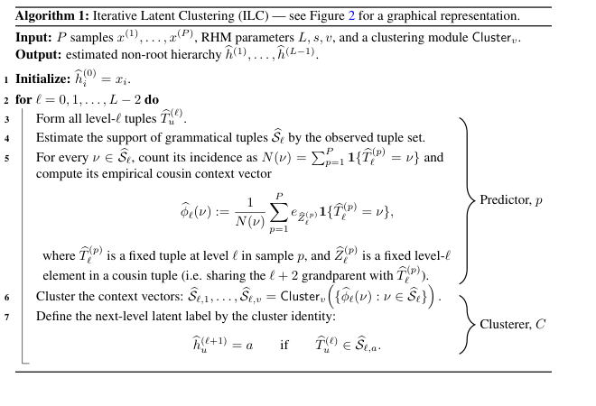
ILC 恢复定理
论文正式定理依赖三个条件：grammar balanced、parent context vectors separated、clustering module 对小扰动稳定。非 root hierarchy 的恢复样本量为：
在 \(f\) 远离 1 时，主项是 \(P_{\mathrm{ILC}}\asymp v m^3\)，并以至少 \(1-\delta\) 的概率恢复 \(h^{(1)},\dots,h^{(L-1)}\)，允许每层 label 独立 permutation。
SLC: 可微 predictor-clusterer 版本
SLC 用 \(L-1\) 个相同结构的模块模拟 ILC。每个模块有两个子网络：Pred 对 level-\(\ell\) 的 \(s\)-tuple 预测 cousin token distribution；Clust 把 prediction vector 映射到 soft codebook，作为 level-\(\ell+1\) token 输入下一层。
clustering loss 同时拉近高相似 prediction 的 cluster assignment、分开低相似但 assignment 重叠的样本，并用 sparsity reward 促进可解释的离散标签。
data2vec 的归纳解释
data2vec 使用 student-teacher setup：student 看到 masked input \(S\)，teacher 看到完整 input \(x\)，目标 \(Y_i(x)\) 是 teacher 最后 \(K\) 层 activation 的平均。作者的理论解释是：EMA teacher 会把 student 已学会的 latent 带入下一阶段 target。
Phase 0 等价于 masked token prediction，学到 level-1 latent，阈值 \(P\gtrsim v m^3\)。Phase \(\ell\ge 1\) 时，teacher target 中已有 \(h^{(1)},\dots,h^{(\ell)}\)，输入上下文也可解析到 level-\(\ell\)，于是下一步又变成 ILC 的 cousin-tuple clustering，仍是同一个 \(v m^3\) 门槛。
3. 实验设计与复现细节
三个层面验证同一个 \(v m^3\) 缩放
| 实验 | 研究问题 | 设置 | 评估 | 核心结论 |
|---|---|---|---|---|
| ILC clustering | 显式递归 clustering 是否达到理论阈值 | RHM，\(L=5,s=3,v=8\)，varying \(m\)；每层用 k-means 聚类 context vectors | 与 ground-truth latent label 做最佳 permutation matching 后的 reconstruction accuracy | 以 \(P/(v m^3)\) 重标定后曲线 collapse，恢复阈值随 \(m^3\) 缩放 |
| SLC end-to-end | gradient-trained predictor-clusterer 是否饱和 ILC 统计界 | \(L=4,s=3,v=10\)，varying \(m\)；最终层 representation 冻结后训练 linear probe | top-level non-root latent 的 probe accuracy；附录用 \(L=3,\dots,7\) 做 depth sweep | SLC 曲线按 \(v m^3\) collapse，且 depth sweep 支持样本复杂度不随 \(L\) 指数增长 |
| SLC local rules | 是否必须 end-to-end backprop 和 EMA teacher | \(L=4,v=10,m=10,s=3\)，比较 full SGD、layer stop-gradient、predictor-to-clusterer stop-gradient | classification accuracy | 仅 layer stop-gradient 且无 EMA 时可能 collapse；阻断 predictor-to-clusterer 梯度后，局部信号仍能学习 |
| data2vec online | 单个 latent-prediction SSL 是否隐式做 hierarchical clustering | \(L=4,s=2,v=16\)，\(m=3,\dots,7\)，online fresh samples；mask probability 0.15 | mean-pooled final features 上训练 MLP probe 预测 root label | root classification accuracy 按 \(P/(v m^3)\) collapse；不符合 token-level SSL 的 \(v m^5\) 预期 |
| data2vec geometry | encoder 是否真的把 synonyms 聚近 | 对 input 做 synonym swap 与 generic swap，比较 hidden representation 变化 | synonym clustering score \(C_\ell\)，以及 teacher target 中 latent 的 linear probe accuracy | 不同 \(\ell\) 的曲线也按 \(v m^3\) collapse，支持递归 latent clustering 机制 |
| data2vec offline | 固定训练集重复 epoch 时，样本数与优化步数能否解耦 | 固定 \(P\) unique strings，多 epoch pretraining | linear probe 和 MLP probe | offline 下同样观察到 \(v m^3\) collapse |
SLC 训练细节
附录 C 给出 SLC 的关键实现：输入 one-hot 到维度 \(d_h\)，每个模块把 \(s^{L-\ell}\) 长度序列压缩到 \(s^{L-\ell-1}\)。默认训练使用 AdamW、Jacobian descent / UPGrad，主要超参数包括 \(\alpha_{\mathrm{ema}}=0.015\)、learning rate \(3\times 10^{-3}\)、weight decay \(10^{-3}\)、hidden width \(d_{h2}=150\)、batch size 32、clustering dimension \(d_h=128\)、similarity margin \(S_m=0.8\)、\(\lambda_{\mathrm{sep}}=0.5\)、\(N_{\mathrm{compare}}=300\)、\(\lambda_{\mathrm{spars}}=10^{-2}\)。这些在 \(L=5,v=16,m=8,s=3\) 上用 Optuna TPE + Hyperband 调过。
Table 1: data2vec hyperparameters
| Group | Hyperparameter | Value |
|---|---|---|
| Encoder architecture | hidden dim \(d_{\mathrm{model}}\) | 2048 |
| attention heads \(n_h\) | 32 | |
| head dim | 64 | |
| encoder layers \(n_l\) | 8 | |
| FFN dim \(d_{\mathrm{ff}}\) | 8192 \(=4d_{\mathrm{model}}\) | |
| non-linearity | GELU | |
| dropout | 0.1 | |
| positional / token embeddings | learned, \(T\times d_{\mathrm{model}}\); learned, \(V_{\mathrm{tok}}=v+2\) ids | |
| LayerNorm placement | pre-LN | |
| data2vec objective | mask probability | 0.15 |
| mask span length | 1 | |
| top-\(K\) teacher layers averaged | \(K=4\) | |
| per-layer LayerNorm of targets | yes | |
| global LayerNorm of targets | no | |
| regression head depth | 1 linear layer | |
| loss | smooth L1, \(\beta=4\) | |
| teacher EMA decay \(\mu\) | 0.99, constant, no annealing | |
| Optimization | optimizer | AdamW |
| \((\beta_1,\beta_2)\) | (0.9, 0.98) | |
| weight decay | 0.01, excluding bias / LayerNorm | |
| learning rate | \(\eta=10^{-4}\), constant | |
| LR schedule | none, no warmup, no decay | |
| gradient clipping | global L2 norm \(\le 1.0\) | |
| batch size \(B\) | 512 | |
| training steps \(T_{\mathrm{steps}}\) | 262,144 | |
| Probes | pooling | mean over positions |
| linear probe | \(\mathrm{Linear}(d_{\mathrm{model}},v)\) | |
| MLP probe | \(d_{\mathrm{model}}\rightarrow 2d_{\mathrm{model}}\rightarrow v\), GELU, dropout 0.1 | |
| probe optimizer | Adam, lr \(10^{-3}\) | |
| probe steps per eval | 2000 for each linear / MLP probe |
Compute budget
作者报告：SLC Figure 3 约 10 H100 hours；\(L\)-scaling Figure 12 约 100 H100 hours；Figure 9 约 3 H100 hours；data2vec experiments 约 1000 H100 hours。Optuna sweeps 和 preliminary experiments 没有给出估计。
4. 实验结果与核心结论
最重要的结论不是“data2vec 更好”，而是“latent target 改变了可见相关性的距离”
token-level SSL: \(P_{\mathrm{tok}}\asymp v m^{L+1}\)。learn-from-latent: \(P_{\mathrm{latent}}\asymp v m^3\)，对 \(L\) 无指数依赖。
k-means 递归恢复全非 root hierarchy；在 \(P/(v m^3)\) 轴上 collapse，说明第一层门槛足以逐层爬升。
可微模块通过 gradient descent 达到同一缩放；局部 stop-gradient 条件下仍可工作，提示不一定需要全局 end-to-end credit assignment。
online 与 offline regimes 都支持 \(v m^3\)；root probe 需要解析所有非 root latent，因此这是强于只看低层表示的证据。
synonym swap 引起的 representation shift 小于 generic swap，且 \(C_\ell\) 曲线 collapse，说明 encoder 几何上在聚合 synonyms。
若单个 data2vec 已经隐式做 multi-scale latent prediction，显式堆叠 H-JEPA 可能收益有限；但这只在 RHM 和本文 assumptions 下成立。
如何读 Figure 1
Figure 1 把三类目标的 weakest pertinent correlation 可视化。supervised classification 的 target 在 root，低层 tuple 到 root 的 tree-distance 最大；token-level SSL 的 target 在 leaf，高层 latent 要向下穿过 descendant channel；latent SSL 则把 target 提升到同层 cousin，使每一层都保持局部统计问题。
如何读 Figure 4 和 Figure 5
Figure 4 的右图不是直接预测某个低层 latent，而是冻结 data2vec encoder 后，用 pooled final-layer features 做 root classification。因为 root classification 需要所有非 root hierarchy 被解析，再加上顶层 tuple 到 root partition 的少量 labeled examples，所以 \(v m^3\) collapse 是对“隐式层级恢复”的更强证据。Figure 5 进一步展示 encoder representation 对 synonyms 的不变性：\(C_\ell>0\) 表示 synonym swap 比 generic swap 更少改变表示。
负结果和边界
Figure 11 用 token-level SSL 的 \(m^{L+1}\) 轴尝试 collapse，结果明显变差；这支持作者选择 \(m^3\) 而不是 token baseline。另一方面，论文没有在真实语言或图像上验证“突破 scaling laws”，主文最后也把 controlled comparison with next-token baseline 作为后续建议，而非已完成结论。
5. Figure / Table 导航
实际图表裁剪与阅读索引
原 PDF 的图多为矢量绘制，PyMuPDF 未抽出独立图片；这里使用渲染页手工裁剪。每张 crop 都来自本 build 目录的 `assets/pages/page_*.png`，caption 在多数 crop 中保留，复杂数值仍以原 PDF 为准。
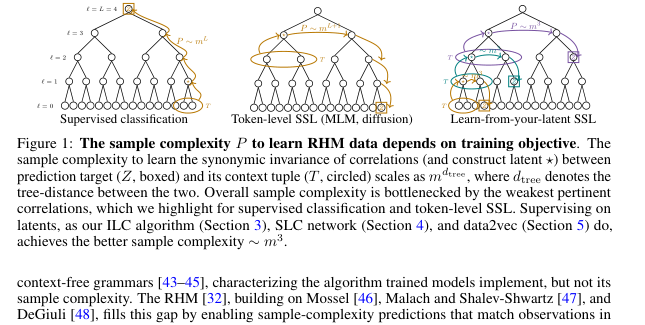
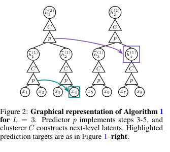
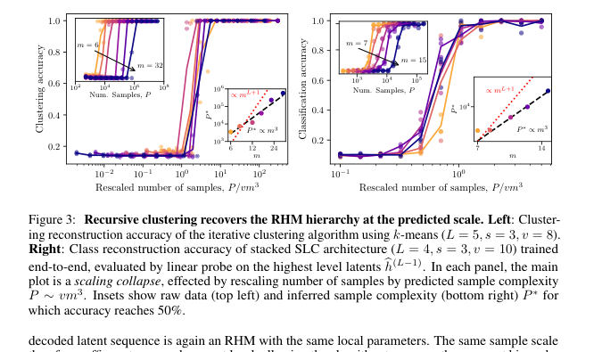
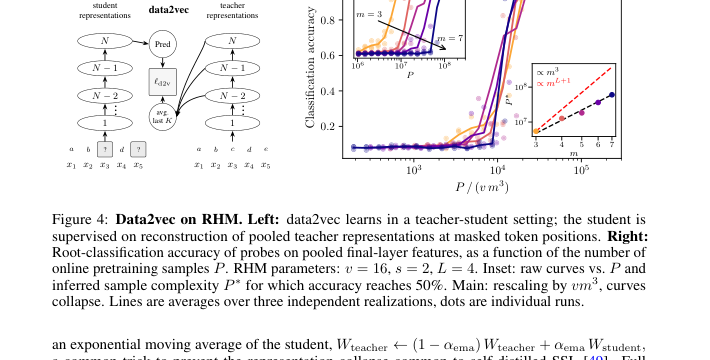
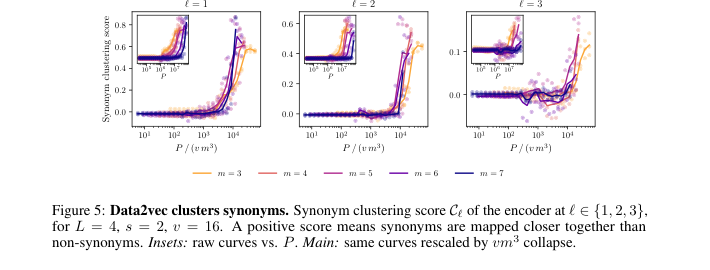
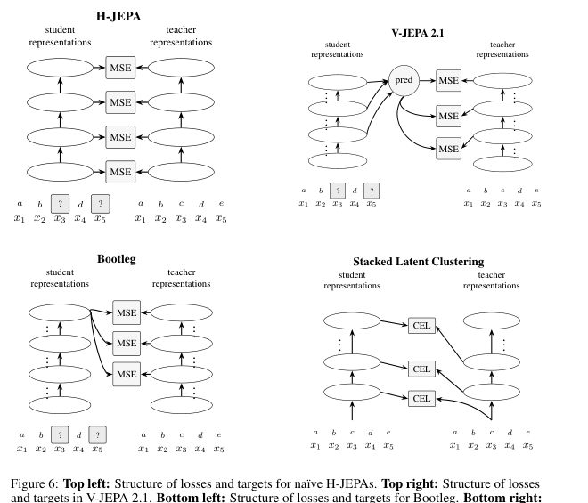
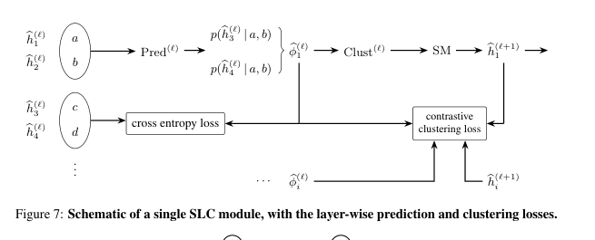
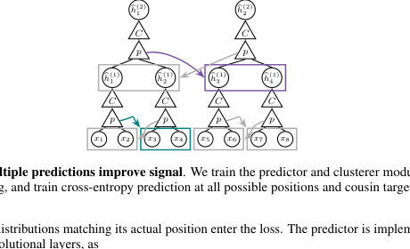
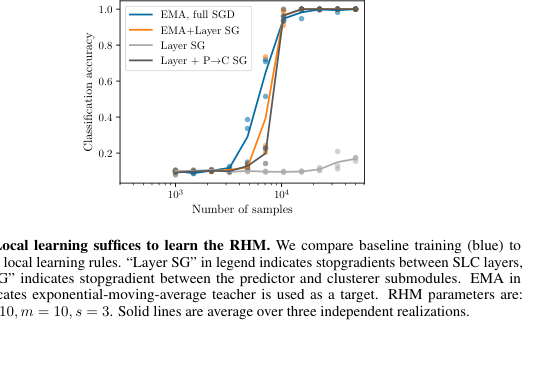
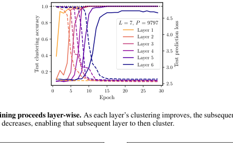
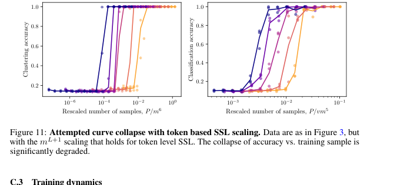
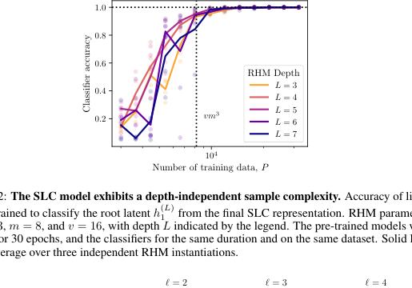
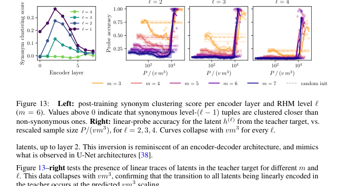
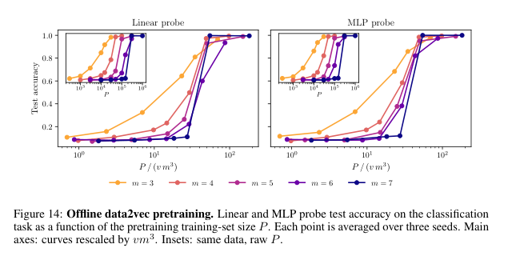
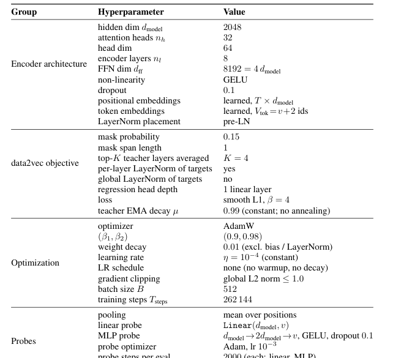
6. 复现清单
可复现性中等：合成数据和超参数清楚，但未发现官方代码链接
论文对 RHM、ILC、SLC、data2vec 设置给了足够多的数学和超参数细节；但 arXiv 页面没有显示官方 code URL，本次构建也未检索到随论文发布的仓库。因此复现路径清楚，工程成本和算力成本较高。
最小复现路径
- 实现 fixed-tree RHM：参数 \(s,v,m,L\)，按每层 \(v m\) 个合法 tuple、每 parent \(m\) 个 rules 的方式采样 grammar。
- 实现 ILC：枚举 observed grammatical tuples，估计 \(\hat\phi_\ell(\nu)\)，用 k-means 或稳定 clustering module 聚成 \(v\) 类。
- 复现 Figure 3 left：固定 \(L=5,s=3,v=8\)，扫 \(m\)，报告 matched reconstruction accuracy，并以 \(P/(v m^3)\) 重标定。
- 实现 SLC predictor-clusterer：用 cross-entropy cousin prediction、contrastive clustering、EMA teacher 或 stop-gradient stabilizer。
- 复现 Figure 3 right 和 Figure 12：训练后冻结 representation，用 linear probe 预测 highest non-root latent 或 root latent。
- 实现 data2vec text recipe：8-layer transformer，mask probability 0.15，teacher target top-\(K=4\)，smooth L1 loss，EMA \(\mu=0.99\)。
- 用 online 和 offline 两种 regime 训练，分别复现 root probe accuracy 与 synonym clustering score。
需要特别核对
- balanced / separated grammar 是否在有限 \(v,m,L\) 下稳定成立，特别是 \(f\) 接近 1 时。
- clustering stability 的具体实现：理论定理要求 perturbation 小于 separation 的固定比例。
- SLC contrastive loss 的 memory sampling：\(N_{\mathrm{compare}}=300\) 是实用折中，可能影响 prefactor。
- data2vec 的 online \(P\) 表示 pretraining samples，而 offline \(P\) 是 unique strings；不要混淆优化步数和样本复杂度。
- 作者没有给 Optuna preliminary sweeps 的算力估计，完整调参成本可能显著高于正文复现曲线。
7. Reviewer Critique
理论清晰、实验对齐，但真实数据外推仍是主风险
把 latent prediction 的数据效率优势转化为可计算的 sample-complexity statement，并用 RHM 提供 token-level SSL、ILC、SLC、data2vec 的统一比较框架。Figure 1 的弱相关路径解释很有说服力。
ILC 定理相对扎实；SLC 和 data2vec 的 scaling collapse 与几何分析互相补强。data2vec 部分仍依赖 A1/A2 和 phase idealization，不是完整训练动态证明。
作者自己指出需要 same-architecture data2vec vs next-token prediction controlled comparison。真实语言/图像数据上的 scaling-law 验证、不同 mask span、teacher depth、model size sweep 也缺失。
RHM 的固定树、非递归、unambiguous grammar 让 “same-level cousin target” 很干净；自然数据里 latent 边界、branching factor、valid tuple fraction 和 context-dependence 都可能破坏同样的 \(m^3\) 结论。
我会要求的补充
- 在同一 transformer architecture 上加入 next-token / masked-token baseline，固定 compute 和 optimizer，直接比较 sample efficiency。
- 系统扫 \(f=m/v^{s-1}\)，验证 \((1-f)^{-1}\) 因子及接近 \(f=1\) 时的失效模式。
- 对 data2vec teacher target 的 linear latent trace 做时间序列分析，验证“phase-by-phase”不是事后解释。
- 把 RHM 扩展到 variable topology 或 recursive rules，再测 latent prediction 是否仍能保持深度无关样本复杂度。
- 发布代码和 exact seeds，否则 1000 H100-hour 级别的 data2vec 复现实验门槛很高。
8. 对我的研究方向的启发
把 replay 和 self-evolution 的监督对象从答案 token 提升到 latent state
不要只 replay final answer 或 reward-labeled trajectory。可以让 agent 预测自己的 higher-level task state、plan embedding、tool-result abstraction，使训练信号停留在同一抽象层，减少 token-level 稀释。
questioner 可被设计成产生“同层 cousin view”：不同问题或 mask 暴露同一 latent concept 的相关视图，solver 学的是 latent equivalence class，而不是表面答案模板。
SLC 的 contrastive clustering loss 提醒我们：latent 自蒸馏必须同时防止 trivial collapse 和 synonym over-splitting。replay buffer 需要保留同义变体与非同义负例。
可用 representation-level synonym swap / generic swap 度量 agent 是否学到任务不变量，而不是仅看最终成功率。这个指标对自进化系统尤其有用。
构造可控层级任务时，应该同时扫 branching/depth/valid fraction，看样本复杂度是随 depth 指数增长，还是主要由局部 synonym multiplicity 决定。
latent prediction 不是免费午餐。teacher target 如果没有携带可解析 latent，或 replay views 不共享同层语义，机制会退化成普通 token prediction 或 collapse。
一句话 takeaway：这篇论文为“从自己的中间表征学习”提供了一个可检验的理论理由。对 agent / RLVR / self-evolution，最有价值的迁移不是照搬 data2vec，而是设计训练数据和 replay 机制，让监督信号尽量落在与待学习概念相同的 latent scale。